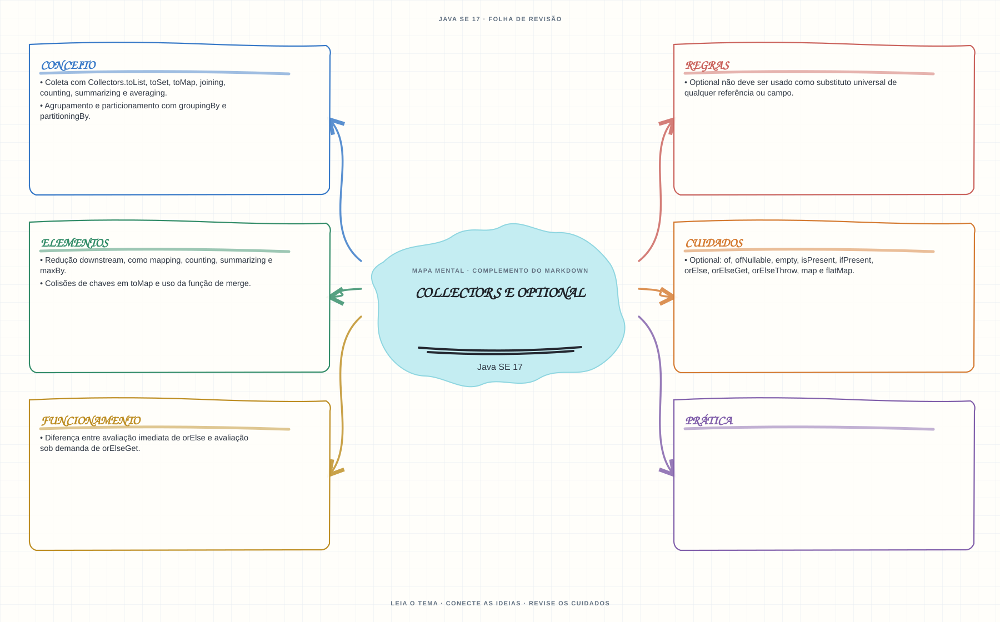

Ver mapa mental deste assuntoAgrupar e reduzir dados com collectors e escolher operações de Optional conforme o comportamento desejado.
Aprofundamento e revisão 1Z0-829: use esta página depois dos fundamentos. Os tópicos de prova complementam a trilha inicial e não são pré-requisitos para começar a programar.
- Leia o objetivo e localize a ideia principal no conteúdo abaixo.
- Preveja o resultado, compile e execute o exemplo.
- Faça a atividade sem copiar a solução e confira a checagem comentada.
EXEMPLO DE CONSOLE
Veja a regra em execução
Antes de executar, anote sua previsão. Compile o exemplo com o JDK e compare a saída observada com as regras deste assunto.
Comandos para compilar e executar
javac -d target/bin src/06-streams-e-lambdas/collectors-e-optional/CollectorsEOptionalExample.java
java -cp target/bin CollectorsEOptionalExampleA execução imprime o resultado no console para você comparar com sua previsão.
Consultar código-fonte: CollectorsEOptionalExample.java
import java.util.List;
import java.util.Map;
import java.util.Optional;
import java.util.stream.Collectors;
public class CollectorsEOptionalExample {
private record Estudante(String nome, String turma) {
}
private static String criarAlternativa() {
System.out.println("Avaliando a expressao alternativa.");
return "Valor alternativo";
}
public static void main(String[] args) {
System.out.println("=== Collectors e Optional ===");
List<Estudante> estudantes = List.of(
new Estudante("Ana", "A"),
new Estudante("Bruno", "B"),
new Estudante("Alice", "A"));
Map<String, List<String>> porTurma = estudantes.stream()
.collect(Collectors.groupingBy(
Estudante::turma,
java.util.TreeMap::new,
Collectors.mapping(Estudante::nome, Collectors.toList())));
Optional<Estudante> estudanteInexistente = estudantes.stream()
.filter(estudante -> estudante.nome().equals("Carla"))
.findFirst();
Optional<Estudante> estudanteEncontrada = estudantes.stream()
.filter(estudante -> estudante.nome().equals("Ana"))
.findFirst();
System.out.println("groupingBy + mapping agrupa nomes por turma: " + porTurma);
System.out.println("Optional vazio usa a alternativa: "
+ estudanteInexistente.map(Estudante::nome).orElse("Estudante nao encontrado"));
System.out.println("orElse avalia a alternativa mesmo quando o Optional tem valor:");
String resultadoOrElse = estudanteEncontrada.map(Estudante::nome).orElse(criarAlternativa());
System.out.println("Resultado de orElse: " + resultadoOrElse);
String resultadoOrElseGet = estudanteEncontrada.map(Estudante::nome)
.orElseGet(CollectorsEOptionalExample::criarAlternativa);
System.out.println("orElseGet so chama o fornecedor quando o Optional esta vazio: "
+ resultadoOrElseGet);
}
}
PRATIQUE AGORA
Faça uma pequena alteração por conta própria
Agrupe tarefas por estado com Collectors.groupingBy e conte quantas existem em cada grupo.
Concluído quando: o programa compilar, produzir o resultado esperado e você conseguir explicar a regra aplicada.
CHECAGEM RÁPIDA · Collectors e Optional
Qual é a diferença de avaliação entre orElse(valor) e orElseGet(supplier)?
Conferir resposta comentada
orElse avalia o argumento mesmo quando o valor existe; orElseGet só chama o supplier quando o Optional está vazio.
Estude
- Coleta com
Collectors.toList,toSet,toMap,joining,counting,summarizingeaveraging. - Agrupamento e particionamento com
groupingByepartitioningBy. - Redução downstream, como
mapping,counting,summarizingemaxBy. - Colisões de chaves em
toMape uso da função de merge. Optional:of,ofNullable,empty,isPresent,ifPresent,orElse,orElseGet,orElseThrow,mapeflatMap.- Diferença entre avaliação imediata de
orElsee avaliação sob demanda deorElseGet. Optionalnão deve ser usado como substituto universal de qualquer referência ou campo.
Prática
Agrupe objetos por categoria e produza um resumo por grupo. Compare orElse e orElseGet com uma expressão que tenha efeito observável.
Como este capítulo se relaciona com cada exame
Lambdas e streams surgem no Java 8; confirme se pertencem ao exame-alvo.
Base de estudo deste portal; confirme o mapeamento com o blueprint vigente.
Conceitos úteis; valide as APIs e o escopo atualizado de Java 21.
Orientação editorial sobre reaproveitamento do material; não representa objetivos oficiais nem garante cobertura do exame. Consulte o comparativo e as fontes da Oracle.